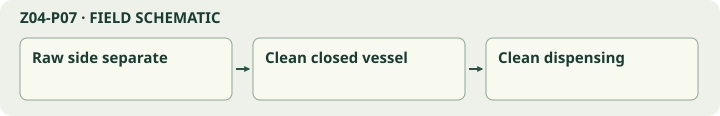

Z04-P07 · Water · Adapted historical material
Keep treated water clean
Store drinking water without mixing it with raw sources or contaminated utensils.
When it applies · Treated or commercially potable water kept for later use.
Equipment · Clean, sanitized tight-closing food-grade containers and separate raw-water container.

Actions
- Use a suitable vessel with known previous use. Reject one that held toxic chemicals.[W06]
- Mark raw and finished containers. Keep the lid, threads and outlet on the clean side of the workflow.[W06, ED]
- Dispense without introducing unclean hands, cups or raw-water implements. Close the vessel after use.[W06, ED]
Verify · Containers stay distinguishable and the storage cap and dispensing surfaces remain clean.[W06, ED]
Stop or change course · If untreated water or suspect contact mixes with finished water, withhold it until an appropriate treatment decision is made. Suspected chemical contamination requires another supply.[W01, W06, ED]
Evidence and editorial notes
- W01 · CDC · How to Make Water Safe in an Emergency (2024-09-19)
- Section: Water with fuel or toxic chemicals in it · Conditions: Suspected fuel, toxic chemicals or radioactive contamination
Support: Use a different safe supply. Standard boiling and microbial disinfection do not make this water safe.
Limitations: Does not list contaminant-specific lab remediation; applies to emergency consumer decisions only. · Conflicting evidence: None across CDC/EPA emergency guidance.
Editorial note: Used as upstream hard-stop gate prior to any field treatment card. · Specialist reviewer: Drinking-water safety and public health
Primary source · checked 2026-11-24 - W06 · CDC · How to Create an Emergency Water Supply (current web edition)
- Section: How to store emergency water; Safe storage containers · Conditions: Potable water intended for emergency storage
Support: Prefer sealed commercial water or clean food-grade tight-closing containers. Avoid containers that held toxic chemicals.
Limitations: Container shelf durability and rotation depend on plastic/material type and storage heat. · Conflicting evidence: None; reinforces strict raw-vs-clean segregation.
Editorial note: Used to enforce labeling and dedicated raw/potable vessel separation. · Specialist reviewer: Drinking-water safety and public health
Primary source · checked 2026-11-24
Source lineage · B009 revision and B003 storage · Classification · Adapted historical material.